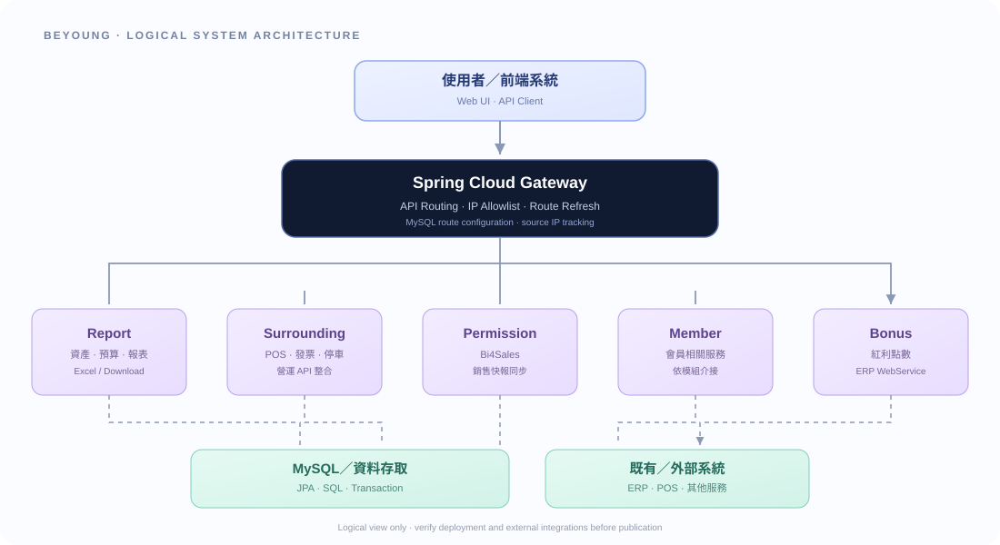

Backend Development
Java、Spring Boot、Spring MVC、REST API、Spring Data JPA、Maven 多模組專案。
服務層設計 · API 開發 · 除錯
JAVA BACKEND · SYSTEM INTEGRATION
我是鍾昌興，專注 Java 後端開發、既有系統現代化與企業內部系統整合。從硬體研發到金融交易，再到零售營運系統，我重視系統穩定性、資料一致性與可維護性。
01 / ABOUT
具備 25 年以上工程相關經驗，曾投入硬體／晶片研發與技術管理，之後轉向 Java 後端及金融交易系統開發。這樣的跨領域背景，讓我習慣從需求、資料流、例外情境到維運風險，完整理解一項功能。
目前的作品方向聚焦百貨零售企業系統：報表與資產管理、周邊營運服務、銷售快報，以及 API Gateway 路由和來源 IP 管理。重視可追蹤的實作證據，也會清楚區分已完成、已測試與仍待外部環境驗證的功能。
02 / SKILLS
以實際專案脈絡呈現技術，不以工具清單取代工程成果。
Java、Spring Boot、Spring MVC、REST API、Spring Data JPA、Maven 多模組專案。
舊系統程式分析、SQL／資料流追蹤、ERP WebService、POS、會員點數及營運服務介接。
Spring Cloud Gateway、動態路由管理、IP 白名單、來源 IP 足跡及登入失敗紀錄。
MySQL、SQL、交易管理、Excel 報表、資產盤點、預算檢核及審核流程。
03 / SELECTED WORK
依專案責任與實際可說明的成果整理；外部環境尚未驗證的功能會明確標示。
建立 Spring Cloud Gateway 管理層，處理新舊系統 API 轉發、路由持久化與重新載入，並提供 IP 白名單及來源追蹤功能。
涵蓋資產盤點、員工資產、預算管理、人事出勤、加班、銷售與會員消費分析。
分析與轉換 POS、發票、停車折抵、會員點數、APP、電子簽到等既有營運功能。
進行既有 Java 銷售業績與報表模組環境建置、程式轉換、資料結構調整及除錯。
04 / ARCHITECTURE
概念圖呈現目前整理出的模組責任與關係；實際部署拓樸依公司環境為準。

說明：圖中為邏輯架構示意，不代表所有模組均已部署至正式環境；Kafka 等事件驅動方案屬評估方向，未列為已正式上線功能。
05 / ENGINEERING APPROACH
從 Controller、Service、SQL、資料表與呼叫關係建立完整資料流。
區分路由、業務規則、資料存取與外部介接，降低修改風險。
清楚區分程式完成、本機測試與外部端到端驗證，讓成果可追溯。
07 / CONTACT
歡迎洽談 Java 後端開發、系統整合、舊系統現代化及技術管理相關機會。
上線前請將以上三項替換成你願意公開的聯絡資訊。